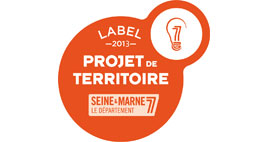

|
Mardi, 25 Juin 2013 00:00 |
T-Transport lauréat du label 2013 « projet de territoire »

|
Le Conseil Général a attribué à M. Traore, directeur, pour sa société T-Transport le label « projet de territoire ».
Ce label confirme le dynamisme de cette entreprise et la qualité de ses prestations.
|
|
Pour l’E.P.M.S. et les familles des enfants qui sont transportés chaque jour par les agents de cette société, cette récompense est aussi un gage de sérieux et de sécurité.
Félicitation à M. TRAORE pour ce label qui récompense un travail de qualité.
 Voir le courrier officiel Voir le courrier officiel
|
 |
|
|
Mise à jour le Samedi, 24 Octobre 2015 21:34 |